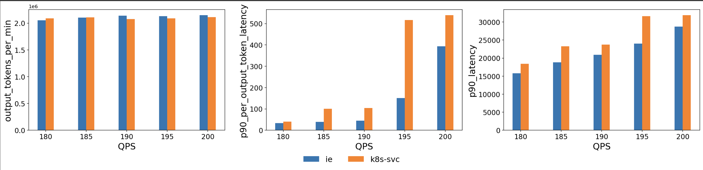

Benchmark¶
This user guide shows how to run benchmarks against a vLLM model server deployment by using both Gateway API Inference Extension, and a Kubernetes service as the load balancing strategy. The benchmark uses the Latency Profile Generator (LPG) tool to generate load and collect results.
Prerequisites¶
Deploy the inference extension and sample model server¶
Follow the getting started guide to deploy the vLLM model server, CRDs, etc.
Note: Only the GPU-based model server deployment option is supported for benchmark testing.
[Optional] Scale the sample vLLM deployment¶
You are more likely to see the benefits of the inference extension when there are a decent number of replicas to make the optimal routing decision.
kubectl scale deployment vllm-llama3-8b-instruct --replicas=8
Expose the model server via a k8s service¶
To establish a baseline, expose the vLLM deployment as a k8s service:
kubectl expose deployment vllm-llama3-8b-instruct --port=80 --target-port=8000 --type=LoadBalancer
Run benchmark¶
The LPG benchmark tool works by sending traffic to the specified target IP and port, and collecting the results. Follow the steps below to run a single benchmark. Multiple LPG instances can be deployed to run benchmarks in parallel against different targets.
-
Check out the repo.
git clone https://github.com/kubernetes-sigs/gateway-api-inference-extension cd gateway-api-inference-extension -
Get the target IP. The examples below shows how to get the IP of a gateway or a k8s service.
# Get gateway IP GW_IP=$(kubectl get gateway/inference-gateway -o jsonpath='{.status.addresses[0].value}') # Get LoadBalancer k8s service IP SVC_IP=$(kubectl get service/vllm-llama2-7b -o jsonpath='{.status.loadBalancer.ingress[0].ip}') echo $GW_IP echo $SVC_IP -
Then update the
<target-ip>in./config/manifests/benchmark/benchmark.yamlto the value of$SVC_IPor$GW_IP. Feel free to adjust other parameters such asrequest_ratesas well. For a complete list of LPG configurations, refer to the LPG user guide. -
Start the benchmark tool.
kubectl apply -f ./config/manifests/benchmark/benchmark.yaml -
Wait for benchmark to finish and download the results. Use the
benchmark_idenvironment variable to specify what this benchmark is for. For instance,inference-extensionork8s-svc. When the LPG tool finishes benchmarking, it will print a log lineLPG_FINISHED. The script below will watch for that log line and then start downloading results.benchmark_id='k8s-svc' ./tools/benchmark/download-benchmark-results.bashAfter the script finishes, you should see benchmark results under
./tools/benchmark/output/default-run/k8s-svc/results/jsonfolder. Here is a sample json file. Replacek8s-svcwithinference-extensionwhen running an inference extension benchmark.
Tips¶
- When using a
benchmark_idother thank8s-svcorinference-extension, the labels in./tools/benchmark/benchmark.ipynbmust be updated accordingly to analyze the results. - You can specify
run_id="runX"environment variable when running the./download-benchmark-results.bashscript. This is useful when you run benchmarks multiple times to get a more statistically meaningful results and group the results accordingly. - Update the
request_ratesthat best suit your benchmark environment.
Advanced Benchmark Configurations¶
Refer to the LPG user guide for a detailed list of configuration knobs.
Analyze the results¶
This guide shows how to run the jupyter notebook using vscode after completing k8s service and inference extension benchmarks.
-
Create a python virtual environment.
python3 -m venv .venv source .venv/bin/activate -
Install the dependencies.
pip install -r ./tools/benchmark/requirements.txt -
Open the notebook
./tools/benchmark/benchmark.ipynb, and run each cell. In the last cell update the benchmark ids withinference-extensionandk8s-svc. At the end you should see a bar chart like below where "ie" represents inference extension. This chart is generated using this benchmarking tool with 6 vLLM (v1) model servers (H100 80 GB), llama2-7b and the ShareGPT dataset.